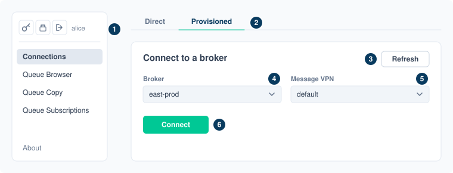
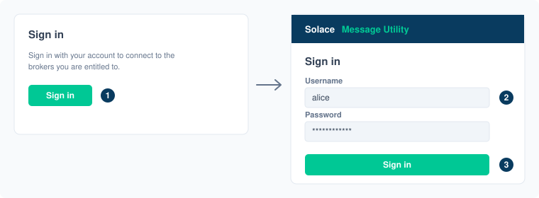
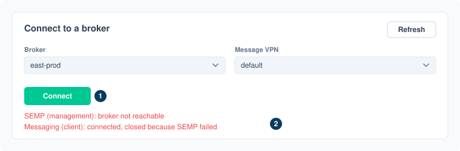
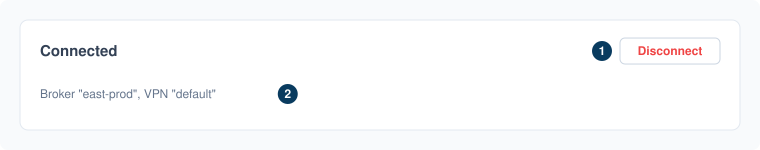

Sign in to the gateway and connect to the brokers an administrator has granted you. You choose a broker and a Message VPN by name. You never see or type a broker address, a username or a password for the broker.
Provisioned connections need a gateway in Provisioned mode: the gateway serves this page and holds the brokers' accounts. You also need an account on the gateway, and at least one broker and Message VPN granted to it. The Provisioned tab is on the Connections page, so everything here continues the Connections chapter above.

The tabs appear only when your deployment offers both ways to connect. Direct is the form of the Connections chapter above, where you type the broker's details yourself. Provisioned is where you sign in. When a deployment offers one way only, there are no tabs and you see that one panel.
The deployment decides which tab opens first. After you sign in, the Provisioned tab opens. When the gateway offers only Provisioned connections, opening the app takes you straight to the gateway's sign-in page.
Each tab warns you before its Connect closes the other connection. The Direct tab shows A Provisioned connection is open. Connect here closes it, and you stay signed in. The Provisioned tab shows A Direct connection is open. Connect here closes it. When you press Connect on the Provisioned tab then, the gateway is first asked whether your session still stands. If it has ended, the Direct connection is left alone and the tab returns to the Sign in card.
If the page cannot tell whether the gateway serves it, it shows Could not check whether this page is served by the gateway. in place of the panels. Press Retry to ask again.
While you are signed out, the Provisioned tab shows a Sign in card. The button is a link to the gateway's own sign-in page. You type your password there, never in this app.

If the gateway asks you to choose a password first, the card's button reads Change password instead of Sign in. Press it and follow "Changing your password" below.
Your sign-in survives a reload of the page. It ends when you sign out, after a period without activity, and a fixed time after you signed in; your administrator sets both limits. Activity is your own typing, clicking and scrolling anywhere in the app: while you work, the page keeps the sign-in in use, and a page left alone runs out. Unless your administrator has changed them, they are 10 minutes without activity and 30 minutes after you signed in. It also ends when an administrator changes your account. If it ends while you are using the page, the card says Your session has ended. Sign in again.
The Connect to a broker card, called the Connect card in this chapter, holds the lists and the button.
Connecting SEMP (management) to broker "east-prod"..., then Connecting messaging (client) to broker "east-prod", VPN "default"...A Provisioned connection is two connections that one press of Connect opens together. SEMP (management) is the connection the pages use to read lists, such as the queues you can bind. Messaging (client) carries the messages themselves. You are connected only when both are up. If one fails, the one that came up is closed again, so nothing stays half-connected.
If your account has no broker granted, the card shows No connections are available for your account. Ask an administrator to grant access. in place of the lists. Once an administrator has granted access, press Refresh.
The card says which of the two connections failed and why, one line for each. A connection that comes up and is closed again because the other failed gets a line too. The page tries the messaging connection even when SEMP has failed, so one attempt can show both reasons.

The full text of each failure goes to the notification bell. Open the bell when the card only says failed, details in the log.
| Reason on the card | What it means and what to do |
|---|---|
broker not reachable | The gateway could not reach the broker. A SEMP failure that timed out reads broker not reachable (timed out), and a messaging one timed out. Try again. If it keeps happening, tell your administrator. |
broker refused the gateway's account | The broker turned down the account the gateway holds for it. Your administrator must put it right. |
not available to your account | The gateway does not offer you that broker or Message VPN. Press Refresh, then ask your administrator if it is still missing. |
too many attempts, wait a minute | The gateway limits how often you may connect. Wait a minute and try again. |
gateway not reachable | This page could not reach the gateway. Check your network. |
gateway did not answer in time | The gateway took too long to answer. Try again. |
the gateway could not complete it | The gateway failed on its side. Tell your administrator. |
| The broker's own words, when short | For example a refused client login. A longer reason reads failed, details in the log. |
The two connection names are SEMP (management) and Messaging (client). A line for a connection that is closed again reads, for example, Messaging (client): connected, closed because SEMP failed.
If your session has ended while you connect, you return to the Sign in card, which says Your session has ended. Sign in again.

The other pages of the sidebar now work on this connection, limited to what you were granted.
While you are connected, the Connect card and its Refresh button are hidden. To change broker or Message VPN, or to press Refresh, press Disconnect first.
If the messaging connection drops without you asking, SEMP is closed too and the card returns with Messaging (client): connection dropped, so SEMP was closed too. Press Connect again. Disconnect and Sign out are not faults, so the card simply reads as not connected.
Press Refresh to read your brokers, Message VPNs and pages from the gateway again. It does not sign you out and does not reload the page. Use it after an administrator has changed what you may use. The pages in the sidebar change to match.
If the gateway cannot be reached, the card shows the reason and keeps the list you had. If your session has ended, you return to the Sign in card.
There are two ways.
Current VPN is "default". Switch to "billing"? Press Switch to continue, or Cancel to stay as you are. On Switch the messaging connection closes and opens again on the other Message VPN, and SEMP stays up. The page you came from then opens with the queue.If you are not connected when you pick such a queue, the app takes you to the Connect card and you choose the broker and Message VPN yourself.
A switch that cannot finish leaves the reason on the Connect card and in a warning that begins Could not switch to VPN "billing": and then gives the reason. The reasons are:
the session on VPN "default" did not close within 10 s.VPN "billing" did not connect within 30 s.the connection to VPN "billing" closed before it came up.Messaging (client): followed by the reason of a failed connect, as in the table above. SEMP is closed too, because the connection is one connection. Press Connect to start again.While a connect is running, a request to switch is refused with A connection attempt is in progress. Try again once it has finished.
Press Change password, the key icon at the top of the sidebar. It opens the gateway's own page. The page is a link away from the app, so leaving it closes your connection. Press Connect again when you return.
N to 128 characters. Your administrator sets the shortest length.Press Cancel to leave without changing anything. When the gateway insists on a change first, the page says You must set a new password before you continue. and has no Cancel.
| Message | What to do |
|---|---|
The current password is not correct. | Type your current password again. A wrong password counts like a failed sign-in. |
The new passwords do not match. | Type the same text in both new-password boxes. |
The new password must be N to 128 characters. | Choose one of a length the page allows. |
The new password must differ from the current one. | Choose a different password. |
Too many attempts. Try again in N seconds. | Wait as long as the message says. |
The password could not be checked. Try again. or The password could not be saved. | Nothing changed. Try again, and tell your administrator if it repeats. |
Your account was changed while this request ran. Sign in again. | Sign in again, then repeat the change. |
The gateway cannot record changes right now, so it refused this one. Try again later or tell an administrator. | Nothing changed. Try again later. |
Two-factor sign-in asks for a six-digit code from an authenticator app on your phone after your password. Your administrator decides whether it is optional, required for administrators, or required for everyone. Whatever the rule, you can set it up yourself, and once it is on, the gateway always asks for a code.
When the gateway requires it of you and you have not set it up, the sign-in carries on to the page Set up two-factor sign-in after your password, and you are not signed in until you finish. Start at step 2 below. To set it up of your own accord, press Two-factor sign-in, the lock icon at the top of the sidebar.
The picture could not be drawn. Type the key into your app instead.If you lose your phone but still have a recovery code, type it in Code to sign in. Then set two-factor sign-in up again on the new phone.
Setting it up again, for example on another phone, replaces the key and the recovery codes and signs you out everywhere else. This browser stays signed in.
After your password, the page Two-factor sign-in says Enter the 6-digit code from your authenticator app, or one of your recovery codes. Type the code in Code and press Continue. Spaces or hyphens inside the digits do not matter. A recovery code works once, and its letters may be in either case, with or without hyphens or spaces. Start again goes back to the password. A half-finished sign-in is dropped after the time your administrator allows, 10 minutes unless they have changed it.
| Message | What to do |
|---|---|
The code is not correct. | Type the code the app currently shows. A code works once, so if you sign in again straight away, wait for the app's next code. The same message appears on the set-up page when the first code is wrong, and the page shows the same key again. A used recovery code does not work again. Wrong codes count like wrong passwords. |
The password or the code is not correct. | On the page Two-factor sign-in that asks for your password, check both and try again. |
Too many attempts. Try again in N seconds. | Wait as long as the message says. |
The gateway cannot record changes right now, so it cannot accept a recovery code. Sign in with the code from your authenticator app, or try again later. | Use the code from the app, or wait. |
The gateway shows you only what an administrator granted you. Each grant names brokers, Message VPNs and queues, and gives one of two levels.
| Level | What it lets you do on a queue |
|---|---|
| Operate | Browse the queue, forward messages and delete them. |
| Read-only | Browse the queue and forward messages. Queue Browser marks the queue with a Read-Only badge and hides Delete. Queue Copy can copy from it, but not move from it. |
You are not entitled to browse queue "orders.private".You are not entitled to write to queue "orders.archive". A topic destination is not checked against your grants: the broker decides where the connection may publish.If an administrator takes away something you were using while you work, whatever depended on it stops. The gateway also closes your messaging connection when you sign out, in this tab or another, when your password or administrator status changes, and when an administrator removes your access to that broker or Message VPN. SEMP is closed with it, as in "The connected view" above.
| Message | What it means and what to do |
|---|---|
Your session has ended. Sign in again. | The gateway ended your sign-in. Press Sign in. |
You must change your password before you continue. | Press Change password and choose a password. |
Sign-in failed. Check the username and password. | On the gateway's page: check both. The message is the same whatever went wrong. |
Sign-in could not be checked. Try again. | The gateway could not look up your account. Try again. |
Too many requests. Wait a minute and try again. or, on the gateway's page, Too many requests from this address. Wait a minute and try again. | Wait a minute. |
The gateway could not be reached. | Check your network, then press Refresh. |
The gateway did not answer in time. followed by a sentence about changes | If you were changing something, reload the page to see where things stand before you try again. |
Broker "east-prod" is not provisioned for this account. or VPN "default" is not provisioned on broker "east-prod". | Your account does not hold that grant. Press Refresh, or ask your administrator. |
The broker refused the credential the gateway holds for it. Ask an administrator to check the connection. | Only an administrator can fix this. |
The gateway could not reach the broker, or the broker gave an answer it cannot pass on. Its log has the cause. | Tell your administrator. |
The gateway relays SEMP reads only; this request would change the broker. | A Provisioned connection only reads through SEMP. Nothing is changed. |